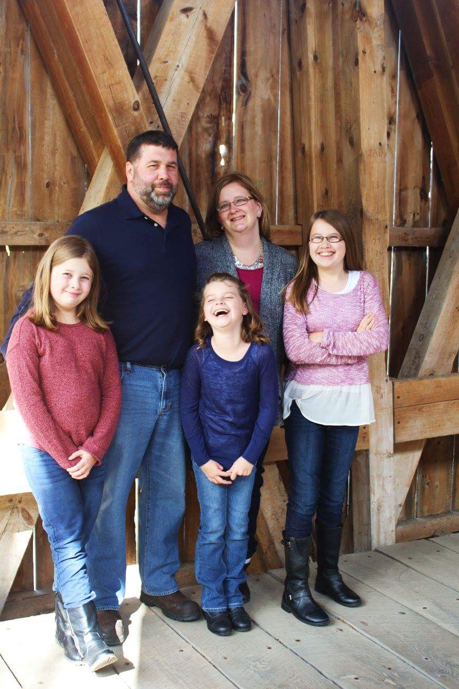

About Me:
My professional career started as an elementary school teacher. In anticipation of the birth of my first child, I made the decision to resign from teaching. My original plan was to return to teaching, but God had other plans for me. I stepped into a role as a co-caretaker for both of my parents through their end-of-life journeys.
Now that it is time to go back into the full-time workforce, I am working toward pivoting into the Technology Industry as a Product/Project Manager or User Experience/User Interface designer.
Pics of Me and My Family:
Here are a few pictures of me and my family. I am the wife of one, mother of three young-adult/teenage daughters, and doggie mommy to the cutest furbaby on the planet.
